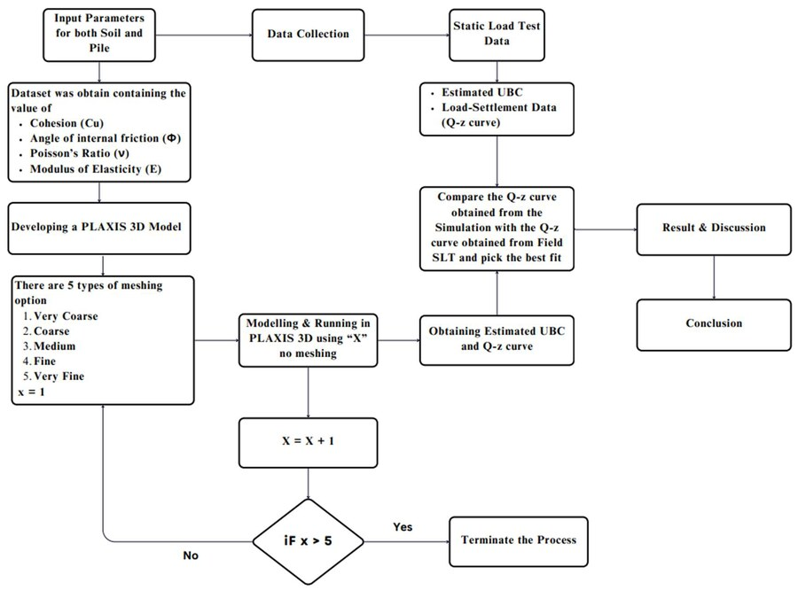
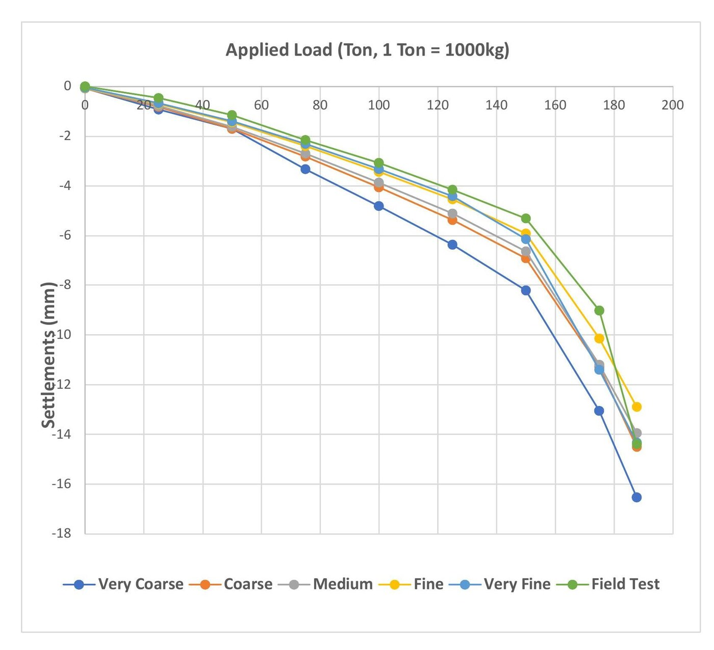

B.Sc. Thesis: Pile Static Load Tests in PLAXIS 3D
Can a finite-element model, once benchmarked against one real static load test, be trusted to stand in for the next one? This thesis builds a PLAXIS 3D model of an actual test pile in Dhaka, Bangladesh, and checks its predicted capacity against what the field test measured.

Abstract
Accurately estimating the ultimate bearing capacity (UBC) of a pile is one of the central problems in deep foundation design. Engineers have traditionally relied on two approaches: analytical or empirical correlations, and field static load tests (SLTs). Analytical and empirical methods are fast and inexpensive but lean on simplifying assumptions about soil behavior that often make them unreliable in practice. Static load tests are the most trustworthy method, since a pile is loaded incrementally in the field while its settlement is measured, but they are slow, expensive, and logistically demanding.
This thesis explores a third option: using PLAXIS 3D, a finite-element program built specifically for geotechnical analysis, to numerically reproduce a full-scale static load test and estimate UBC directly from the simulated load-settlement (Q-z) response. The study is grounded in real data: an actual static load test and geotechnical investigation carried out for the proposed Co-operative Bhaban building in Shahbagh, Dhaka, Bangladesh. The simulation modeled Test Pile TP-4, a cast-in-situ reinforced concrete pile 558.8 mm (22 in) in diameter and 13 m (43 ft) long, embedded in the stratified soil profile recorded at the nearest borehole, BH-2.
Five mesh densities were run and compared against the field Q-z curve. The very fine mesh produced the closest match, and applying the Davisson (1972) offset method to that curve gave an estimated UBC of 183 tonnes, within 1.6% of the 186-tonne benchmark measured in the field. Classical analytical (O'Neill & Reese) and empirical (Meyerhof, SPT-based) methods were also run for a broader frame of reference, and diverged from the field result by a much wider margin than the finite-element model did. The conclusion: PLAXIS 3D, given accurate input parameters and a sufficiently fine mesh, can reproduce field SLT results closely enough to serve as a reliable, far cheaper substitute or complement to physical load testing.
Why this problem matters
Pile foundations carry loads from buildings, bridges, and other structures down into deeper, more competent soil. Getting their ultimate bearing capacity wrong in either direction is costly. Overestimate it and the foundation is unsafe. Underestimate it and the design is needlessly expensive. Static load tests remain the gold standard for measuring UBC directly, but their cost and time demands mean they usually aren't feasible for every pile on a project, so engineers need a way to extend a handful of field-verified results to the rest of a site with confidence. That gap is what motivates this study: could a finite-element model, once benchmarked against one real static load test, be trusted to stand in for the next one?
Site and data
The load test and geotechnical investigation behind this study were carried out at the proposed Samabaya Bhaban (Co-operative Bhaban) site, Plot No. F/10 A & B, Sher-e-Bangla Nagar, Shahbagh, Dhaka. Ten boreholes, Standard Penetration Tests (SPT), and laboratory testing of soil samples characterized the site; three piles were load-tested (TP-1, TP-2, TP-4), and this thesis focuses on TP-4, using soil parameters from BH-2, the closest borehole to that pile. The field loading protocol applied the load in eight increments, holding each stage until the settlement rate dropped below 0.25 mm/hr or two hours elapsed, whichever came first. The PLAXIS 3D model was built to replicate that same protocol.
Modeling approach
The PLAXIS 3D model represented the soil as five Mohr-Coulomb elastic-perfectly-plastic layers (clay, clay, silt, medium-dense sand, dense sand), with modulus, cohesion, friction angle, and Poisson's ratio for each layer derived from SPT data and standard geotechnical correlations (Bowles, 1997). Pile-soil interfaces were modeled using PLAXIS's Rinter reduction-factor approach, and the pile itself was modeled as linear elastic concrete.
Rather than committing to a single mesh resolution, five separate meshes (very coarse, coarse, medium, fine, and very fine) were each run through the full eight-step loading sequence, so that mesh choice could be evaluated on both accuracy and computational cost rather than accuracy alone. The very fine mesh took roughly 28 minutes to solve versus under 5 minutes for the coarser options, so the comparison had real practical stakes: is the extra accuracy worth the extra runtime?
The ultimate bearing capacity from each mesh's Q-z curve was then read off using the Davisson (1972) offset method: drawing the pile's theoretical elastic-compression line, offsetting it by 0.15 + 0.1×D (in inches, where D is the pile diameter), and taking the load at which the measured settlement curve crosses that offset line as the UBC. The same Davisson procedure was applied to the field SLT data to produce the 186-tonne benchmark this study compares against, and separately to conservative PLAXIS runs using reduced-modulus soil parameters, to check how sensitive the UBC estimate is to input uncertainty. For a broader frame of reference, UBC was also estimated using two classical methods that don't require finite-element modeling at all: the O'Neill & Reese analytical method and the Meyerhof SPT-based empirical correlation.

Results
The mesh comparison showed a clear, if unsurprising, accuracy/cost trade-off. All five meshes produced Q-z curves with the correct overall shape, but the coarser meshes diverged more from the field curve at higher loads. The very fine mesh's Q-z curve tracked the field data most closely across the full loading range and was adopted as the basis for the UBC estimate. The medium and coarse meshes, though, were close enough to the field curve to be reasonable choices for less critical applications, at roughly a sixth of the very fine mesh's computation time. That's a genuinely useful practical finding for anyone trying to decide how much mesh refinement a project actually needs.
Applying the Davisson method to the very fine mesh Q-z curve gave a UBC of 183 tonnes. Against the field-measured 186 tonnes, that's a deviation of about 1.6%, close enough to call the simulation an accurate reproduction of the real pile's behavior and not just a qualitatively similar one. The conservative PLAXIS run, using a deliberately reduced soil modulus, produced a lower, more cautious UBC estimate as intended, useful for design situations where erring safe matters more than matching the benchmark exactly.
The classical methods, run alongside the FE model for a broader frame of reference, diverged from the field benchmark by a much wider margin than PLAXIS 3D did. It's a useful reminder that analytical and empirical correlations, however convenient, need to be checked against real data before they're trusted on a given site. The FE model's 1.6% agreement with the field test is the result this thesis actually rests on.


Conclusion
Taken together, the results support the thesis's central claim: PLAXIS 3D, given well-characterized soil parameters and enough mesh resolution, can reproduce a field static load test closely enough (within 1.6% here) to serve as a dependable, considerably cheaper alternative to repeated physical load testing. The mesh-density comparison also gives practicing engineers a real basis for choosing "good enough" mesh resolution rather than defaulting to the most expensive option. It reinforces a more cautionary lesson too: purely analytical or empirical UBC methods diverged from the field result by a much wider margin here, and shouldn't be relied on without some form of field or numerical calibration. This work was later extended in a follow-up study that rebuilt the same pile-soil system in ANSYS Mechanical, a general-purpose structural FEM tool, to see how a non-specialist platform compares to PLAXIS 3D's purpose-built geotechnical solver. That companion project is presented separately.
Companion study. The same pile‑soil system was later rebuilt in ANSYS Mechanical, a general‑purpose structural FEM tool, to see how it compares to PLAXIS 3D's purpose‑built geotechnical solver.
Read the ANSYS study →